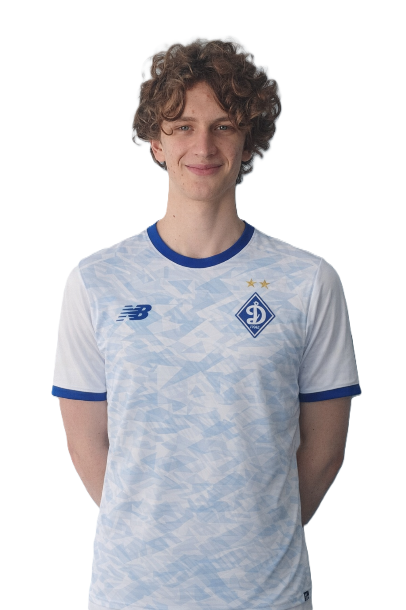

Олександр Воробев – надійний центральний захисник, який впевнено діє в обороні та добре читає гру. Він відзначається сильним позиційним захистом, умінням вигравати єдиноборства та допомагати команді зберігати баланс у захисті. Також активно підтримує команду під час стандартів.
